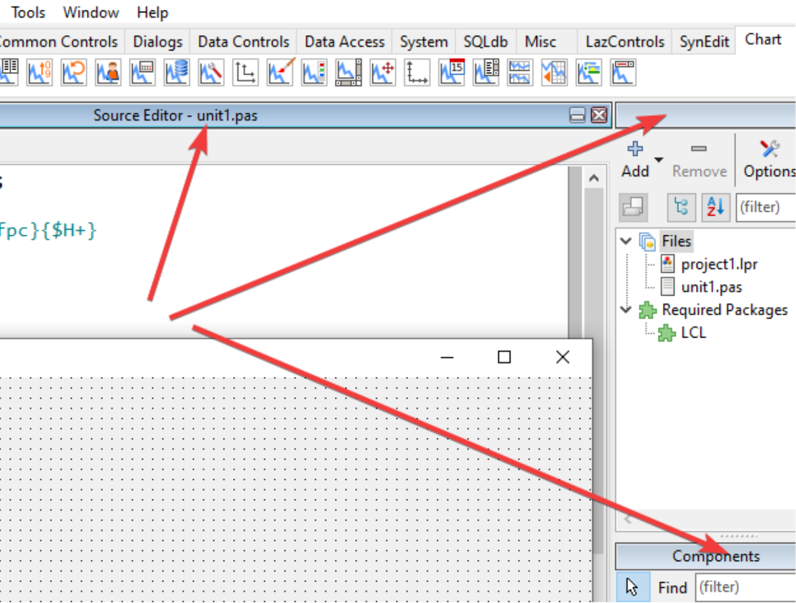
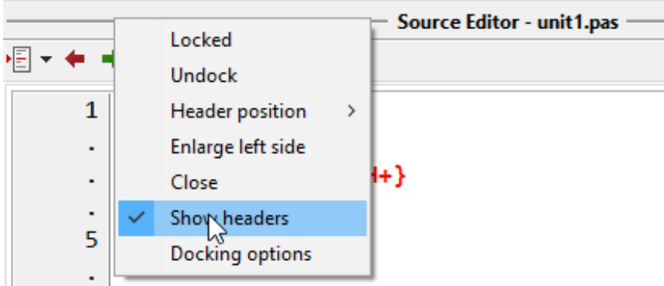
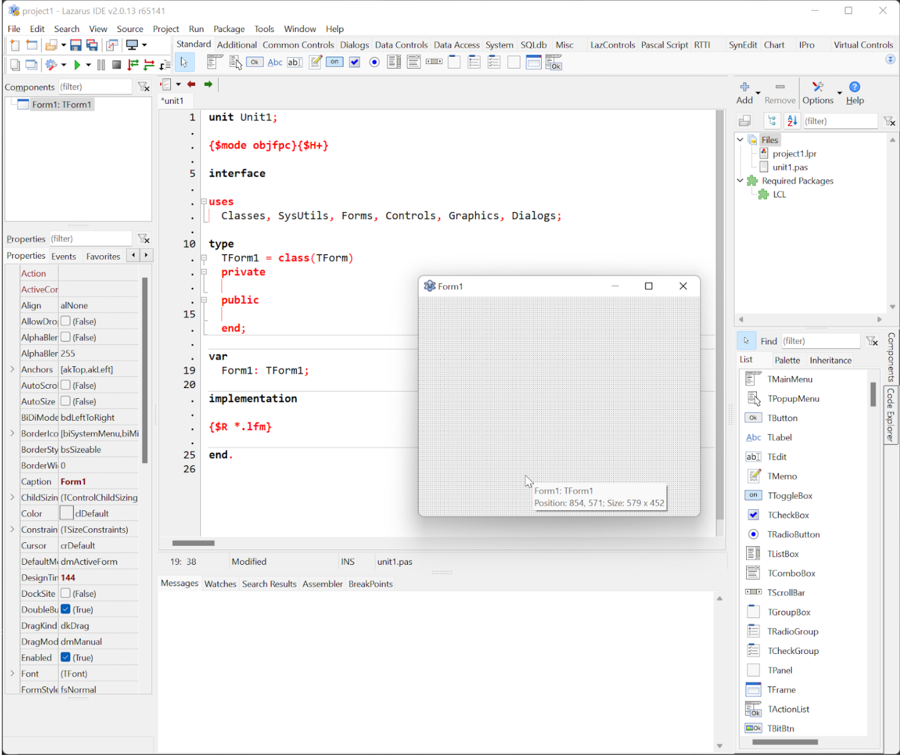

Mostrar ou não mostrar os nomes nos cabeçalhos
Observe os títulos que aparecem no topo ou nas laterais das suas janelas de ferramentas na IDE:

Esses títulos são chamados de “cabeçalhos”. Eles ocupam alguns pixels de altura (ou largura) que podem ser economizados ao ocultá-los. Isso é especialmente útil se você já personalizou sua IDE, não pretende mudar as ferramentas de lugar e já sabe identificar cada painel apenas pelo seu conteúdo.
Se deseja economizar esse espaço, clique com o botão direito sobre qualquer um desses cabeçalhos e desative a opção “Show headers” (Exibir cabeçalho):

Nota pessoal: Eu prefiro manter os cabeçalhos ativos. O motivo é que gosto de ter o botão de “Minimizar” sempre à mão, o que facilita muito a organização temporária do espaço. Ao ocultar os cabeçalhos, você perde esse botão e a capacidade de empilhar docas visualmente de forma rápida.
Caso você os oculte e queira exibi-los novamente, você pode consultar o procedimento específico para recuperação de menus ocultos.
Versão Final Otimizada
O Lazarus oferece inúmeras opções de produtividade. Com o tempo, você descobrirá qual configuração funciona melhor para o seu fluxo de trabalho. Veja abaixo um exemplo de uma IDE com ancoragem completa, mas sem a docagem do editor de formulários (deixando-o flutuante):

No meu fluxo atual, mantenho o código docado e o formulário solto. Uso a opção “Manter aberto” na paleta de componentes para que ela não feche enquanto arrasto objetos. Quando o formulário cobre a paleta, utilizo o atalho Ctrl+Alt+P para trazê-la imediatamente para a frente.
Agora que ajustamos a estética e a funcionalidade, o próximo passo é salvar essas configurações.